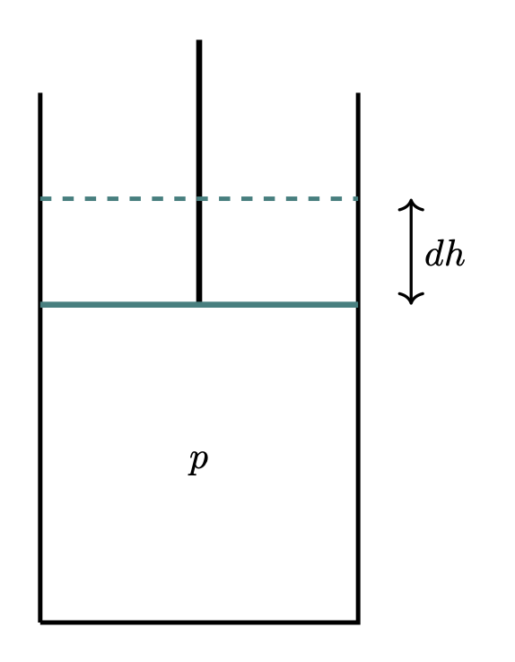
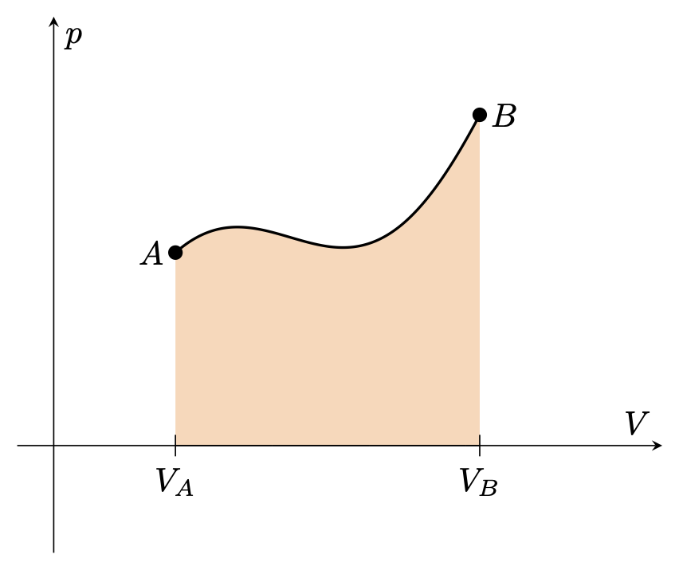
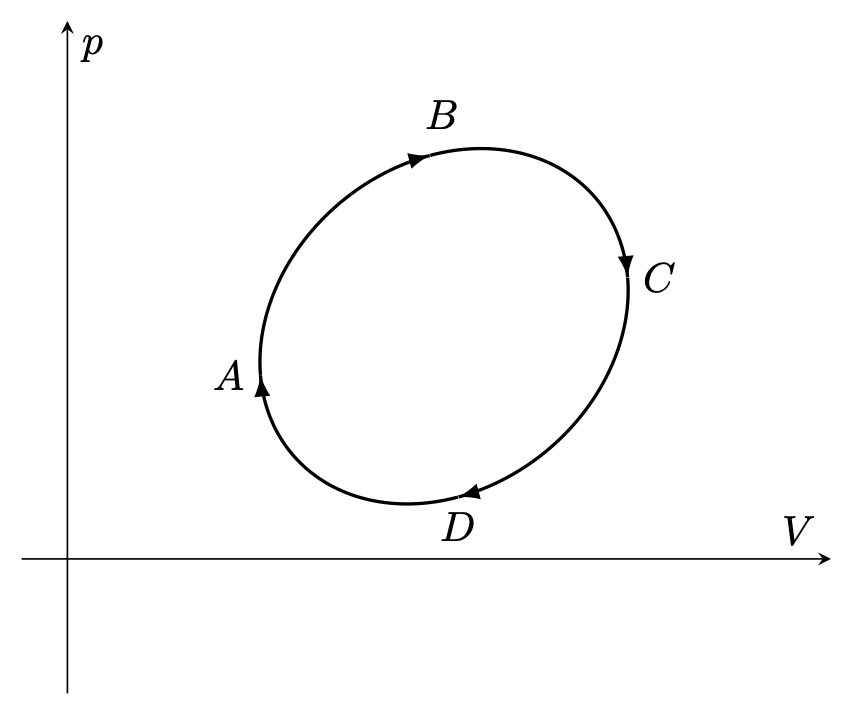
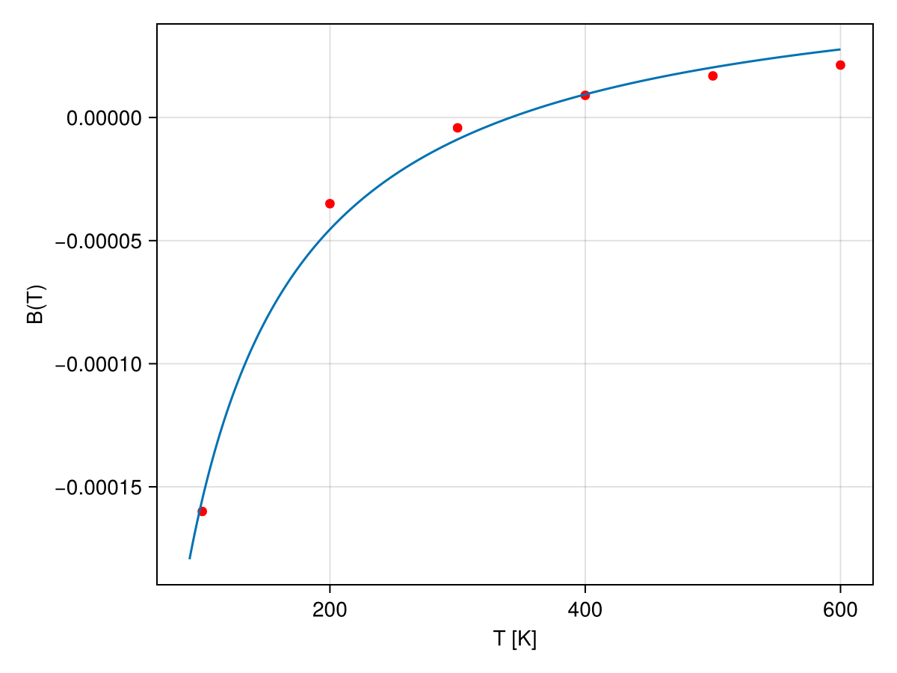
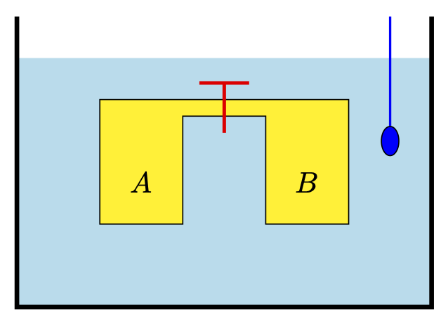
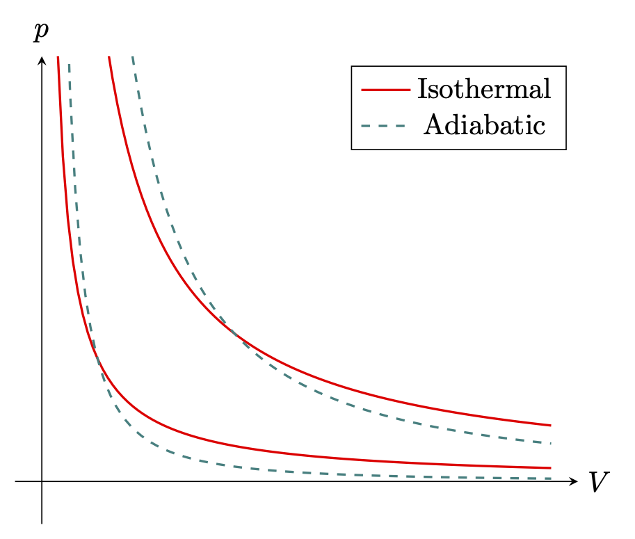

% %
%
\[ \DeclarePairedDelimiters{\set}{\{}{\}} \DeclareMathOperator*{\argmax}{argmax} \]
21.1 열평형
열평형과 이완 시간
- 두 물체가 충분히 오랜 시간 열적으로 접촉한다면 열평형 (thermal equillibrium) 에 도달한다.
- 계가 열평형에 도달하는데 걸리는 시간을 이완 시간 (relaxation time) 이라고 한다.
평형
- 열평형
- 역학적 평형
- 확산 평형 (diffusive equillibrium) : 충분히 섞인 상태
21.2 계의 상태와 변환
역학적 계와 열열학적 계
- 특정 시점에서의 역학계의 상태 (state) 는 각각의 입자의 위치와 속도에 의해 완벽하게 특정된다. 즉 \(N\) 입자계는 \(6N\) 변수에 의해 기술된다.
- 그러나 열역학에서는 \(N\approx 10^{23}\) 개의 입자로 이루어진 계를 다루며 \(6N\) 개의 변수를 특정하는 것은 실질적으로 불가능하다.
- 더우기 열역학에서 다루는 양은 이 계의 평균적인 특성이며, 각각의 입자에 대한 정보는 불필요하다.
열역학적 계
화학적으로 정의된 동일한 종류의 유체로 구성된 계
- 온도 \(T\), 부피 \(V\), 압력 \(p\) 에 의해 상태가 결정된다.
- 이 계의 기하학은 부피 뿐만 아니라 형태에 의해 결정된다. 대부분의 경우 기하학적 모양은 열역학적 특성에 영향을 끼치지 않지만 표면적이 부피에 비해 매우 클때는 표면이 고려되어야 한다.
- 물질이 주어졌을 때 온도, 부피, 압력은 서로 독립적이지 않으며 상태방정식 (equation of state) 이라고 불리는 아래와 같은 형태의 방정식으로 관련된다. \[ f(p, V, T) = 0. \tag{21.1}\]
- 상태방정식의 구체적인 형태는 물질에 따라 다르다. 또한 세 변수중 한 변수는 다른 두 변수의 함수로 기술할 수 있다. 즉 세 변수가운데 두 값을 안다면 상태를 결정 할 수 있다.
화학적으로 정의된 동일한 종류의 고체로 구성된 계
- 유체와는 다르게 압력의 방향이 특정되어야 하지만 많은 경우 등방적인 압력을 가정한다.
여러 화합물이 균일하게 섞여있는 계
- 온도, 부피, 압력 이외에 농도가 고려되어야 한다.
불균일한 계
- 불균일한 계를 다수의 균일한 부분으로 분할한다. 부분적인 균일성이 연속적으로 변할 때는 균일한 부분의 갯수가 무한일 수 있다.
- 이 경우 상태는 각각의 균일한 부분의 질량, 화학 조성, 뭉친 정도, 압력, 부피, 온도 에 의해 결정된다.
움직이는 부분을 가진 계
- 대부분의 열역학적 계는 계의 각각의 부분이 정지해 있거나, 매우 느리게 움직여 부분의 운동에너지를 무시할 수 있다고 간주된다. 이 가정이 적용되지 않는다면 계의 각각의 부분의 속도를 특정해야 한다.
앙상블과 평형상태
- 열역학적 상태를 아는것은 동역학적 상태를 결정하기에는 부족하다. 예를 들어 균일한 유체로 이루어진 계에서 주어진 온도와 부피에 대해 (압력도 따라서 정해진다) 무한에 가까운 분자 운동 상태가 존재한다. 시간이 흐름에 따라 계는 이 가능한 무한한 상태를 순회한다. 이 관점으로는 열역학적 상태는 분자 운동의 결과로 이 계가 순회하는 모든 동역학적 상태의 앙상블 (enssemble) 이라고 볼 수 있다.
- 평형상태 (states of equillibrium) 는 외부의 조건이 변화하지 않았을 때 계의 성질이 변화하지 않는 상태를 의미한다.
- 많은 경우 우리는 계가 초기상테애서 최종상태까지 중간의 무수한 상태를 거쳐 연속적으로 전행되는 것을 생각한다. 이것을 열역학적 과정(thermondynamic process) 혹은 줄여서 과정 (process) 이라고 한다. 만약 상태가 \((V,\,p)\) 도식에 의해 표현 될 수 있다면 이 변환은 초기상태를 의미하는 점과 최종상태를 의미하는 점을 잇는 곡선으로 표현된다.
- 이 변환에서 거치는 모든 상태가 평형상태와 단지 아주 조금의 차이밖에 없다면 이 과정을 가역과정(reversible process) 이라고 한다. 따라서 가역과정의 초기상태와 최종상태는 평형상태 이어야 한다.
- 가역과정은 실제적으로 외부 조건을 매우 느리게 변화시켜 계가 각각의 단계에서 변화된 조건에 적응하게 하여 구현한다.
- 초기상태 \(A\) 에서 최종상태 \(B\) 까지 가역변환 되었다면 이 과정을 역으로 수행하면 \(B\) 에서 \(A\) 까지 변환될 수 있다.
일

열역학적 과정에서 계가 외부에 일을 하거나(음의 일) 외부가 계에 일을 할 수 있다(양의 일)\(^1\).
위의 그림과 같은 실린더-피스톤 시스템을 생각하자. 실린더의 면적을 \(A\) 라고 내부에서 압력 \(p\) 가 작용한다고 하면 피스톤에 가해지는 힘은 \(pA\) 이다. 피스톤이 \(dh\) 만큼 들렸다면 이 시스템이 외부에 한 미소 일(infinitesimla work) \(dW = -pA\,dh\) 이며 \(A\,dh\) 는 부피의 변화 \(dV\) 이므로 미소 일은 다음과 같다. \[ dW = -p\,dV \tag{21.2}\]
유한한 과정에서 이 시스템이 한 일은 위 식을 적분한 것이다. \[ W = -\int_A^B p \,dV \tag{21.3}\]

사이클
싸이클

- 과정에서 초기상태와 최종상태가 동일할 때 이 과정을 순환 (cycle) 혹은 영어 그대로 사이클 이라고 한다. \((V,\,p)\) 도식으로 보인다면 그림 21.3 와 같은 닫힌 곡선으로 표현된다.
- 이 계가 한 일은 \((V,\,p)\) 도상에서의 닫힌 곡선의 면적이다.
- 과정이 그림에서와 같이 \(A\to B\to C\to D\) 라면 이 순환에서 계는 외부에 일을 하게 된다.
중요한 과정 (process)
외부에 일을 하거나 받지 않는 과정을 등적 과정(isochoric process) 이라고 한다. 등적 과정의 경우 과정 전체에 걸쳐 부피가 변하지 않는다.
과정 전체에서 압력이 변하지 않는 과정을 등압 과정(isobaric process) 라고 한다.
과정 전체에서 온도가 변하지 않는 과정을 등온 과정(isothermal process) 라고 한다.
21.3 이상 기체
이상 기체
- 온도 \(T\), 압력 \(p\), 부피 \(T\) 일 때의 기체의 상태 방정식은 근사적으로 아래의 간단한 식으로 나타 낼 수 있다. 여기서 \(T\) 는 절대 온도이다. 기체의 질량이 \(m\) 이고 분쟈량이 \(M\) 일 때의 방정식은 아래와 같으며 이 식을 이상 기체 상태 방정식 (equation of state of an ideal gas or a perfect gas) 라고 한다.
\[ pV = \dfrac{m}{M}RT = \nu RT = Nk_BT. \tag{21.4}\]
여기서 \(R\) 은 기체 상수 (gas constant) 혹은 이상 기체 상수 혹은 기체상수 (gas constant) 라고 하며 그 값은 아래와 같다. \[ R=8.314 \, \text{J}\cdot \text{mol}^{−1}\cdot \text{K}^{−1} \]
\(\nu = m/M\) 은 기체의 몰수 이며 \(N\) 은 기체 분자의 개수이다. \(k_B\) 를 볼츠만 상수 (Boltzmann constant)라고 하며 그 값은 아래와 같다. \[ k_B = 1.380649 \times 10^{-23}\, \text{J/K}. \]
이상기체의 밀도 \(\rho\) 는 아래와 같다. \[ \rho = \dfrac{m}{V} = \dfrac{pM}{RT} \]
등온과정에서 \(pV=\text{constant}\) 이다. 또한 등온과정에서 부피가 \(V_1\) 에서 \(V_2\) 로 변할 때 계가 외부에 한 일은 다음과 같다. \[ W = -\int_{V_1}^{V_2} p\,dV = -\dfrac{m}{M}RT\int_{V_1}^{V_2}\dfrac{dV}{V} = \dfrac{mRT}{M}\ln \left(\dfrac{V_1}{V_2}\right) = \dfrac{mRT}{M}\ln \left(\dfrac{p_2}{p_1}\right) \]
부분압
- 여러 종류 기체의 혼합물은 화학적으로 동일한 종류의 그것과 비슷한 법칙의 지배를 받는다. 여러 기체의 혼합물이 있을 때 그중 한 종류의 혼합물이 같은 온도에서 같은 부피를 채우고 있을 때의 압력을 부분압 (partial pressure) 라고 한다. 돌텅의 법칙은 혼합기체의 경우 전체 얍력은 부분압의 합과 같다는 것을 말한다.
이상기체의 미시적 모델
- 파인만 물리학 강의 분자운동론 을 참고하라.
이상기체와 등분배 정리
아래에 서술되는 등분배 정리 (equipartition theorem) 는 다음에 증명한다.
온도 \(T\) 에서 평행상태인 고전역학적 시스템의 에너지가 \(f\) 개의 제곱항으로 기술되면, 이 시스템의 평균에너지는 \(\displaystyle \dfrac{fk_BT}{2}\) 이다.
단원자 분자의 경우 3차원 병진운동만 가능하므로 \(f=3\) 이다. 이원자 분자 기체의 경우 두 원자 사이의 거리가 일정해야 하므로 \(300\,\text{K}\) 근처에서 \(f=5\) 이다.
1차원 용수철의 경우 \(E=\dfrac{1}{2}mv^2 + \dfrac{1}{2}kx^2\) 이므로 \(n=2\) 이다.
연습문제
연습문제 21.1 (Schroeder 1.17) 낮은 밀도에서도 실제 기체는 이상기체와 다른 행동을 한다. 이 차이를 체계적으로 설명하기 위한 방법이 비리얼 전개 (virial expansion) 를 사용하는 방법으로 아래와 같다.
\[ pV = \nu RT \left(1 + \dfrac{B(T)}{(V/\nu)} + \dfrac{C(T)}{(V/\nu)^2} + \cdots \right), \]
여기서 \(B(T),\,C(T), \ldots\) 를 비리얼 계수 (virial coefficients) 라고 한다. 기체의 밀도가 낮다면 \((V/\nu)\) 가 커서 뒤의 항이 앞의 항보다 작다. 많은 경우 두번째 항 까지만 사용해도 충분하다. 여기서 \(B(T)\) 를 2차 비리얼 계수라고 하며 1차 비리얼 계수는 항상 1 이다. 질소 N2 의 2차 비리얼 계수는 다음과 같다.
| \(T\,(\text{K})\) | \(B\,(\text{cm}^3/\text{mol})\) |
|---|---|
| 100 | -160 |
| 200 | -35 |
| 300 | -4.2 |
| 400 | 9.0 |
| 500 | 16.9 |
| 600 | 21.3 |
(\(a\)) 각각의 온도에서 이차 비리얼 항 \(B/(V/\nu)\) 를 계산하라. 이 때 압력은 1기압이다.
(\(b\)) 분자 사이의 힘을 고려하여 저온에서 \(B(T)<0\) 이며 높은 온도에서 \(B(T)>0\) 인 이유를 설명하라.
(\(c\)) 이상기체와 같이 \(p,\,V,\,T\) 의 관계가 주어졌을 때 이를 상태 방정식 (equation of state) 라고 한다. 밀도가 높은 유체에도 정성적으로 정확한 유명한 상태방정식에는 반데르 발스 방정식이 있다.
\[ \left(p + \dfrac{a\nu^2}{V^2}\right)\left(V-\nu b\right) = \nu RT. \]
여기서 \(a,\,b\) 는 기체에 따라 정해지는 상수이다. 이로부터 2차와 3차 비리얼 계수를 \(a,\,b\) 로 표현하라.
(\(d\)) \(a,\,b\) 값을 질소의 경우에 맞추어 정하여 반데르 발스로부터 \(B(T)\) 의 그래프를 그려라. 이 조건의 범위로부터 반데르 발스 상태방정식의 정확도에 대해 논하라.
(해답). (\(a\)) \(B(T)P/RT\)
(\(b\)) 이상기체와 비교했을 때 \(B(T)<0\) 은 분자들 사이에 인력이, \(B(T)>0\) 은 분자들 사이에 척력이 작용하는 것이다. 낮은 온도에서는 분자들의 운동이 크지 않고 분자들 사이의 인력이 작용하지만 높은 온도에서는 분자들의 운동이 커 충돌을 자주 하기 때문에 척력이 작용하는 것처럼 느끼게 된다.
(\(c\)) 주어진 식을 변형하면
\[ \begin{aligned} \left(p + \dfrac{a\nu^2}{V^2}\right)V &= \dfrac{\nu RT}{\left(1-\nu b/V\right)} \\[0.3em] &= \nu RT \left(1 + \dfrac{b}{V/\nu} + \dfrac{b^2}{(V/\nu)^2} + \cdots \right) \end{aligned} \]
이므로
\[ pV = \nu RT \left( 1 + \dfrac{b- {a/RT}}{V/\nu} + \dfrac{b^2}{(V/\nu)^2} + \cdots \right) \]
이다. 따라서 \(B(T) = b-a/RT,\, C(T) = b^2\).
(\(d\)) Least square fit 을 통해 계산하면 \(b=6.42\times 10^{-5} (\text{m}^3/\text{mol})\), \(a=0.1823 \, \text{J}\cdot\text{m}^3\cdot \text{mol}^2\)

21.4 열역학 제 1 법칙
열역학 제 1 법칙은 열역학 계에서의 에너지 보존 법칙이다. 계의 에너지의 변화량과 외부에서 받은 에너지의 합은 항상 \(0\) 이다.
위의 서술에서 계의 에너지 와 외부에서 받은 에너지 에 대해 명확히 정의해야 한다.
계의 에너지와 에너지 보존
역학적 보존계에서 에너지는 포텐셜 에너지와 운동에너지의 합이며 따라서 계의 동력학 변수의 함수이다. 따라서 외부에서 힘이작용하지 않으면 이 계의 에너지는 일정하다. 즉 이 계가 고립계이고 \(A,\,B\) 가 이 계의 연속적인 상태이며 \(U_A,\,U_B\) 가 각각의 상태에서의 에너지라면 \(U_A=U_B\) 이다.
이 계가 고립계가 아니며 외부에서 \(W\) 만큼이 전달되었다면 (\(-W\) 는 이 계가 외부에 한 일) 다음이 성립한다. \[ U_B-U_A = W. \tag{21.5}\]
이 계의 수많은 입자들 사이의 상호작용에 대해 우리가 알지 못한다면, 우리는 주어진 동역학적 상태의 에너지를 계산 할 수 없다. 그러나 식 21.5 을 이용하여 계의 에너지에 대한 실험적 정의를 할 수 있다.
계의 임의의 상태 \(O\) 를 정한 후 그 에너지를 \(0\) 으로 놓는다. 즉 \(U_O=0\). 앞으로 이 상태를 표준 상태(standard state) 라고 한다. 이제 외부에서 힘을 가하여 상태를 \(A\) 로 변환하였다고 하자. 이 때 외부에서 이 시스템에 해준 일을 \(W_A\) 라고 하자. 그렇다면 \(A\) 상태의 에너지 \(U_A = W_A\) 이며 이 값이 \(A\) 상태에 대한 실험적 정의값이라고 할 수 있다.
이제 두 상태 \(A\), \(B\) 를 생각하자. \(A\to B\) 과정은 \(A\to O \to B\) 과정으로 생각할 수 있으며 \(W=W_B - W_A\) 이므로 \(U_B-U_A = W\) 이다. 이제 우리는 식 21.5 를 얻었다.
실험적으로 정의된 내부 에너지는 표준상태 \(O\) 에 따라 다르다는 것은 자명하다.
에너지 보존과 열
위의 실험적 정의가 의미가 있으려면 \(W_A\) 가 단지 상태 \(O\) 와 상태 \(A\) 에만 의존하며 \(O\to A\) 변환의 경로에 의존하면 안된다. 경로에 의존하지 않는 성질은 식 21.5 으로부터 온다. 즉 만약 이 경로 독립성이 성립하지 않는다면 우리 계에서는 (지금까지의) 에너지 보존이 성립하지 않는다는 의미이며, 에너지 보존을 포기하지 않으려면 역학적 일 이외의 에너지 전달 수단을 인정해야 한다는 의미이다.
예를 들면 (\(1\)) 외부에서 열을 가한다면 계의 온도는 올라가지만 이 계가 일을 하거나 받지 않을 수 있다. (\(2\)) 줄의 실험 은 명백히 역학적 일(\(V\) 가 변하는) 없이도 내부의 온도를 상승시킬 수 있음을 보여준다.
이로부터 우리는 열(heat) 이라는 비 역학적인(non mechanical) 형태로 에너지가 전달되는 것을 인정 할 수 밖에 없다. 즉 열은 에너지이다.
열역학 제 1 법칙
계 와 환경이 열적으로 분리된 경우, 즉 계가 단열체로 둘러쌓인 경우를 생각해보자. 이 경우 계와 환경 사이에 열교환은 없으며 서로 역학적 일을 주고받을수 있을 뿐이다. 이 경우 계가 해준 혹은 받은 일은 초기상태와 최종상태에 의해 결정된다. 또한 계의 에너지 변화 역시 초기상태와 나중상태에 의해 결정된다.
계가 \(A\to B\) 과정을 겪었을 때 에너지 변화 \(\Delta U = U_B-U_A\) 라고 하자. 계가 단열되었으므로 \(\Delta U = W\) 이다.
이제 계가 환경과 단열되지 않았다고 하자. 그렇다면 \(\Delta U \ne W\) 이며 열의 형태로 에너지가 전달될 수 있다. 즉 더 일반적인 형태로 아래와 같이 쓸 수 있다. 이를 열역학 제 1 법칙 이라고 한다. \[ \Delta U = Q + W. \tag{21.6}\]
위 식에서 \(Q\) 는 역학적 에너지(\(dV\ne 0\)) 의 형태가 아닌 다른 형태로 전달되는 에너지 전체이다.
순환 과정일 경우 \(\Delta U = 0\) 이므로 \(W=-Q\) 이다.
21.5 이상기체와 열역학 제 1 법칙
상태가 \((V,\,p)\) 도식으로 표현되는 계에서의 열역학 제 1 법칙
- 동일한 유체로 이루어진 계와 같이 상태가 \(V,\,p,\,T\) 가운데 두개로 정의 될 수 있는 계를 생각하자. 여기서 독립변수가 무엇인지를 정하기 위해 예를들어 아래와 같은 표기는 \(V\) 가 일정한 상태에서의 \(\partial U/\partial T\) 는 아래와 같이 표기한다.
\[ \left(\dfrac{\partial U}{\partial T}\right)_V. \]
- 내부에너지 \(U\), 일 \(W\), 열 \(Q\) 의 미소 변화를 보자. 여기서 주의할것은 \(U\) 는 물질의 상태에만 의존하는 상태 함수(state function) 이지만 일이나 열은 상태에 도달하기까지의 과정에 의존하는 경로 함수(path function) 이라는 것이다. 이를 구분하기 위해 \(dU\) 나 \(\rlap{\raise{0.8ex}{\hspace{0.12em}\scriptstyle -}}dW\) 와 같이 다른 기호를 사용한다. 열역학 제 1 법칙에 의해 다음이 성립한다.
\[ dU = \rlap{\raise{0.8ex}{\hspace{0.12em}\scriptstyle -}}dQ + \rlap{\raise{0.8ex}{\hspace{0.12em}\scriptstyle -}}dW . \tag{21.7}\]
\(\rlap{\raise{0.8ex}{\hspace{0.12em}\scriptstyle -}}dW = -p\,dV\) 이므로 다음과 같다.
\[ dU = \rlap{\raise{0.8ex}{\hspace{0.12em}\scriptstyle -}}dQ - p\,dV \tag{21.8}\]
열용량과 비열
\(T,\,V\) 를 독립변수로 정하면
\[ dU = \left(\dfrac{\partial U}{\partial T}\right)_V\,dT + \left(\dfrac{\partial U}{\partial V}\right)_T\, dV \]
이며 식 21.8 는 아래와 같이 쓸 수 있다. \[ \left(\dfrac{\partial U}{\partial T}\right)_V\,dT + \left[p + \left(\dfrac{\partial U}{\partial V}\right)_T\right] \,dV = \rlap{\raise{0.8ex}{\hspace{0.12em}\scriptstyle -}}dQ. \tag{21.9}\]
\(T,\,p\) 를 독립변수로 정하면 아래와 같은 식을 얻는다. \[ \left[\left(\dfrac{\partial U}{\partial T}\right)_p + p\left(\dfrac{\partial V}{\partial T}\right)_V\right]\,dT + \left[\left(\dfrac{\partial U}{\partial p}\right)_T + p\left(\dfrac{\partial V}{\partial p}\right)_T\right]\,dp = \rlap{\raise{0.8ex}{\hspace{0.12em}\scriptstyle -}}dQ. \tag{21.10}\]
\(V,\,p\) 를 독립변수로 정하면 아래와 같은 식을 얻는다. \[ \left(\dfrac{\partial U}{\partial p}\right)_V\,dp + \left[p + \left(\dfrac{\partial U}{\partial V}\right)_p\right] \,dV = \rlap{\raise{0.8ex}{\hspace{0.12em}\scriptstyle -}}dQ. \tag{21.11}\]
식 21.9 로부터 정적열용량과 정압열용량은 다음과 같다. \[ \begin{aligned} C_V &= \left(\dfrac{\rlap{\raise{0.8ex}{\hspace{0.12em}\scriptstyle -}}dQ}{dT}\right)_V = \left(\dfrac{\partial U}{\partial T}\right)_V, \\[0.3em] C_p &= \left(\dfrac{\rlap{\raise{0.8ex}{\hspace{0.12em}\scriptstyle -}}dQ}{dT}\right)_p = \left(\dfrac{\partial U}{\partial T}\right)_p + p\left(\dfrac{\partial V}{\partial T}\right)_V, \end{aligned} \]
단위 질량당의 열용량을 비열 (specific heat capacity) 이라고 한다. 정적 비열 \(c_V\) 와 정압 비열 \(c_p\) 는 \(C_V,\,C_p\) 를 각각 질량으로 나눈 값이다.
이상기체의 열용량
독립변수로 \(T,\,V\) 를 선택할 때 이상기체의 에너지 \(U=U(T)\) 이며 \(V\) 와는 독립적임이라는 것은 우선 Joule 에 의해 실험적으로 확인되었으며, 이론적으로는 열역학 제 2 법칙을 통해 보일 수 있다. Joule 의 실험은 아래와 같은 장치에서 이루어졌다.

두개의 챔버 \(A,\,B\) 로 이루어진 콘테이너가 그림과 같이 열량계 속에 잠겨 있다. \(A,\,B\) 는 벨브로 연결되어 있다. \(A\) 는 가스로 차 있고 \(B\) 는 진공상태에서 밸브는 잠겨 있다. 열평형 상태에 도달한 후 온도 \(T_1\) 을 재고 밸브를 열고 나서 평형상태에 도달한 후 온도 \(T_2\) 를 쟀을 때 Joule 은 \(T_1\) 과 \(T_2\) 가 거의 차이가 없음을 확인하였다. 이상기체의 경우 \(T_1=T_2\) 일 것이다.
\(T_1=T_2\) 이므로 외부로부터의 열 전달이 없고 따라서 \(\Delta U = W\) 인데 \(A\) 와 \(B\) 로 이루어진 계의 부피는 변화가 없으므로 \(W=0\) 이다. 따라서 \(\Delta U=0\) 이다. 즉 \(U_A = U_{A+B}\) 이므로 우리는 이상기체의 에너지가 온도에만 관계가 있으며 부피와는 무관하다는 것을 알 수 있다. 즉 이상기체의 에너지 \(U=U(T)\) 이다.
이제 이 함수를 알아보자. 우리는 실험적으로 이상기체의 정적 열용량 \(C_V\) 는 온도에만 약간 의존한다는 것을 안다. 여기서는 이상기체의 정적 열용량이 우리가 관심있는 온도 영역에서 상수라고 가정하자. \(U= U(T)\) 이므로
\[ C_V = \dfrac{dU}{dT} \tag{21.13}\]
이며, 따라서
\[ U = C_V T + U_0 \tag{21.14}\]
이다. 여기서 \(U_0\) 는 \(0\,K\) 에서의 이상기체의 에너지이다. 식 21.8 로부터
\[ C_V\,dT + p\,dV = \rlap{\raise{0.8ex}{\hspace{0.12em}\scriptstyle -}}dQ \tag{21.15}\]
임을 안다. 이상기체 상태 방정식 식 21.4 에서 \(\nu = m/M\) 라 놓으면 (\(\nu\) 는 기체의 몰수가 된다)
\[ p\,dV + v\,dp = \nu R\,dT \]
을 얻는다. 이로부터
\[ (C_V + \nu R)dT - v\,dp= \rlap{\raise{0.8ex}{\hspace{0.12em}\scriptstyle -}}dQ \]
이므로 이상기체의 정압 열용량을 아래와 같이 얻을 수 있다.
\[ C_p = \left(\dfrac{\rlap{\raise{0.8ex}{\hspace{0.12em}\scriptstyle -}}dQ}{dT}\right)_p = C_V + \nu R. \tag{21.16}\]
예제 21.1 우리는 이상기체에 대해 다음이 성립함을 보일 수 있다. \[ \left(\dfrac{\partial U}{\partial T}\right)_p = \dfrac{dU}{dT} = C_V, \qquad \left(\dfrac{\partial V}{\partial T}\right)_p = \dfrac{\nu R}{p} \tag{21.17}\]
식 21.14 으로부터
\[ \left(\dfrac{\partial U}{\partial T}\right)_p = C_V + \left(\dfrac{\partial U_0}{\partial T}\right)_p = C_V = \dfrac{dU}{dT} \]
임을 안다. 또한 이상기체 상태방정식 식 21.4 으로부터 \(V=\nu RT/p\) 이므로
\[ \left(\dfrac{\partial V}{\partial T}\right)_p = \left(\dfrac{\partial (\nu RT/p)}{\partial T}\right)_p = \dfrac{\nu R}{p}. \]
이후에 계산하겠지만 하나의 원자로 이루어진 기체 분자의 경우 \(C_V=\frac{3}{2}R\), \(C_p = \frac{5}{2}R\) 이며 두개의 원자로 이루어진 기체 분자의 경우 \(C_V=\frac{5}{2}R\), \(C_p = \frac{7}{2}R\) 이다.
여기서
\[ \gamma := \dfrac{C_p}{C_V} \tag{21.18}\]
를 비열비 (specific heat ratio) 혹은 adiabatic index 라고 한다. 이상기체의 경우 아래와 같다.
\[ \gamma = \dfrac{C_p}{C_V}=1+ \dfrac{\nu R}{C_V}. \]
단원자 분자 이상기체는 \(\gamma=5/3\), 이원자 분자 이상기체는 \(7/5\) 이다.
이상기체의 단열 가역 과정
단열과정 (adiabatic process) 는 \(\rlap{\raise{0.8ex}{\hspace{0.12em}\scriptstyle -}}dQ=0\) 인 과정을 말한다. 그림 21.1 에서 실린더 벽과 피스톤이 모두 열을 전달하지 않는 재질로 되어 있으며 피스톤이 매우 느리게 움직이는 경우가 해당된다. 피스톤이 위로(혹은 실린더 바깥쪽으로) 움직이면 \(\rlap{\raise{0.8ex}{\hspace{0.12em}\scriptstyle -}}dW < 0\) 이며 아래로(혹은 실린더 안쪽으로) 움직이면 \(\rlap{\raise{0.8ex}{\hspace{0.12em}\scriptstyle -}}dW>0\) 이다. \(\rlap{\raise{0.8ex}{\hspace{0.12em}\scriptstyle -}}dQ=0\) 이므로 \(dU=\rlap{\raise{0.8ex}{\hspace{0.12em}\scriptstyle -}}dW\) 이다.
\[ C_V\,dT =- p\,dV \implies C_V\,dT = - \dfrac{\nu RT}{V}\,dV \]
이므로
\[ \dfrac{dT}{T} = - \dfrac{\nu R}{C_V}\dfrac{dV}{V} \]
이며, 이로부터 다음 관계를 얻는다.
\[ TV^{\nu R/C_V}= TV^{\gamma -1} =\text{constant.} \tag{21.19}\]
또한 이상기체 상태방정식을 통해 아래 관계를 얻을 수 있다.
\[ pV^\gamma= \text{constant.},\qquad Tp^{(1-\gamma)/\gamma}=\text{constant.} \tag{21.20}\]
단열 가역과정이 아닌 등온과정에서는 \(pV=\text{constant}\) 가 성립한다는 것을 안다.

잠열
특별한 경우 열을 가해도 온도가 올라가지 않는 경우가 있다. 보통 물의 끓음이나 녹음 같은 상전이가 발생할 때 이며 이 경우 비열은 무한대가 된다. 단위 질량당 상전이에 필요한 열을 잠열 (latent heat) 이라고 한다. 하지만 이 정의는 모호한데 상전이 과정에서 어떤 일을 할수도 있기 때문이다. 일반적으로 압력이 일정한 상태를 가정하고, 등압 팽창 혹은 수축 과정 이외에 필요한 열을 잠열이라고 한다.
연습문제
연습문제 21.2 (Blundell 12.2) 이상기체의 경우 \(pV=\phi(T)\) 로 주어진다. 이것은 다음을 의미함을 보여라.
\[ \left(\dfrac{\partial p}{\partial T}\right)_V = \dfrac{1}{V}\dfrac{d\phi}{dT},\qquad \left(\dfrac{\partial V}{\partial T}\right)_p = \dfrac{1}{p}\dfrac{d\phi}{dT}. \tag{21.21}\]
또한 다음이 성립함을 보여라.
\[ \left(\dfrac{\partial Q}{\partial V}\right)_p = C_p \left(\dfrac{\partial T}{\partial V}\right)_p,\qquad \left(\dfrac{\partial Q}{\partial p}\right)_V = C_V \left(\dfrac{\partial T}{\partial p}\right)_V. \tag{21.22}\]
단열 과정에서 다음이 성립함한다.
\[ \rlap{\raise{0.8ex}{\hspace{0.12em}\scriptstyle -}}dQ = \left(\dfrac{\partial Q}{\partial p}\right)_V \, dp + \left(\dfrac{\partial Q}{\partial V}\right)_p \, dV = 0. \tag{21.23}\]
이 때 \(pV^\gamma\) 가 상수임을 보여라.
(해답). 식 21.21 는 자명하다. Blundell 에서는 일단 \(U=U(T,\,V)\) 임을 가정한다.
\[ dU = \left(\dfrac{\partial U}{\partial T}\right)_V dT + \left(\dfrac{\partial U}{\partial V}\right)_T \, dV \tag{21.24}\]
이므로
\[ \begin{aligned} dQ &= dU + p\,dV = \left(\dfrac{\partial U}{\partial T}\right)_V \,dT + \left[\left(\dfrac{\partial U}{\partial V}\right)_T + p \right] \, dV \end{aligned} \]
이다. 이로부터,
\[ \begin{aligned} C_p &= \left(\dfrac{\partial Q}{\partial T}\right)_p = \left(\dfrac{\partial U}{\partial T}\right)_V + \left[\left(\dfrac{\partial U}{\partial V}\right)_T + p \right] \, \left(\dfrac{\partial V}{\partial T}\right)_p, \\[0.3em] \left(\dfrac{\partial Q}{\partial V}\right)_p &= \left(\dfrac{\partial U}{\partial T}\right)_V \left(\dfrac{\partial T}{\partial V}\right)_p + \left(\dfrac{\partial U}{\partial V}\right)_T + p \end{aligned} \]
따름정리 25.1 에 따라
\[ \left(\dfrac{\partial V}{\partial T}\right)_p \left(\dfrac{\partial T}{\partial V}\right)_p =1 \]
이므로
\[ \left(\dfrac{\partial Q}{\partial V}\right)_p = C_p\left(\dfrac{\partial T}{\partial V}\right)_p \]
이다. 또한 식 21.24 로부터
\[ \left(\dfrac{\partial Q}{\partial p}\right)_V = \left(\dfrac{\partial U}{\partial T}\right)_V \left(\dfrac{\partial T}{\partial p}\right)_V \]
이며
\[ C_V = \left(\dfrac{\partial Q}{\partial T}\right)_V= \left(\dfrac{\partial U}{\partial T}\right)_V \]
이므로
\[ \left(\dfrac{\partial Q}{\partial p}\right)_V = C_V \left(\dfrac{\partial T}{\partial p}\right)_V \]
이다. 단열 과정에서 식 21.23 이 성림하므로
\[ \begin{aligned} 0 = \rlap{\raise{0.8ex}{\hspace{0.12em}\scriptstyle -}}dQ &= C_V \left(\dfrac{\partial T}{\partial p}\right)_V dp + C_p \left(\dfrac{\partial T}{\partial V}\right)_p dV \end{aligned} \]
\[ \left(\dfrac{\partial T}{\partial p}\right)_V =\dfrac{V}{df/dT}, \quad \left(\dfrac{\partial T}{\partial V}\right)_p = \dfrac{p}{df/dT} \]
임을 안다. 또한 \(C_p = \gamma C_V\) 이므로
\[ \begin{aligned} &0 = \dfrac{V}{df/dT} dp + \dfrac{\gamma p}{df/dT} dV \\[0.3em] \implies &\gamma \dfrac{dV}{V} + \dfrac{dp}{p} = 0 \\[0.3em] \implies & pV^\gamma = \text{constant.} \end{aligned} \]
연습문제 21.3 (Blundell 12.3) 상수 \(A,\,B\) 에 대해 다음과 같이 쓸 수 있는 이유를 설명하라.
\[ \begin{aligned} \rlap{\raise{0.8ex}{\hspace{0.12em}\scriptstyle -}}dQ &= C_p dT + A\,dp \\[0.3em] \rlap{\raise{0.8ex}{\hspace{0.12em}\scriptstyle -}}dQ &= C_V dT + B\,dV. \end{aligned} \tag{21.25}\]
위 두식을 빼서 다음이 성립함을 보여라.
\[ (C_p-C_V)\,dT = B dV - Adp. \tag{21.26}\]
또한 온도가 일정할 때 다음이 성립함을 보여라.
\[ \left(\dfrac{\partial p}{\partial V}\right)_T = \dfrac{B}{A}. \tag{21.27}\]
단열 과정에서 다음이 성립함을 보여라.
\[ \begin{aligned} dp &= -(C_p/A)\,dT,\\[0.3em] dV &= -(C_V/B) \,dT. \end{aligned} \tag{21.28}\]
이로부터 단열 과정에서 다음이 성립함을 보여라.
\[ \begin{aligned} \left(\dfrac{\partial p}{\partial V}\right)_\text{adiabatic} &= \gamma \left(\dfrac{\partial p}{\partial V}\right)_T, \\[0.3em] \left(\dfrac{\partial V}{\partial T}\right)_\text{adiabatic} &= \dfrac{1}{1-\gamma} \left(\dfrac{\partial V}{\partial T}\right)_p,\\[0.3em] \left(\dfrac{\partial p}{\partial T}\right)_\text{adiabatic} &= \dfrac{\gamma}{\gamma -1}\left(\dfrac{\partial p}{\partial T}\right)_V. \end{aligned} \tag{21.29}\]
(해답). 이상기체에서 \(p,\,T,\,V\) 가운데 두 변수로 \(dU,\, \rlap{\raise{0.8ex}{\hspace{0.12em}\scriptstyle -}}dQ,\, \rlap{\raise{0.8ex}{\hspace{0.12em}\scriptstyle -}}dW\) 를 기술 할 수 있다는 것을 안다. 식 21.25 에서 첫번째 식은 \((T,\,p)\), 두번째 식은 \((T,\,V)\) 로 기술한 것이다. 두 식을 빼면 식 21.26 를 얻으며 \(dT=0\) 에 대해 식 21.27 을 얻는다. 단열과정은 \(\rlap{\raise{0.8ex}{\hspace{0.12em}\scriptstyle -}}dQ=0\) 이므로 식 21.28 를 얻는다.
식 21.28 으로부터
\[ dp = -\left(\dfrac{C_p}{A}\right)dT = \left(\dfrac{C_p}{A}\right)\left(\dfrac{B}{C_V}\right)dV \]
이므로
\[ \left(\dfrac{\partial p}{\partial V}\right)_\text{adiabatic} = \dfrac{C_p}{C_V}\dfrac{B}{A} = \gamma \left(\dfrac{\partial p}{\partial V}\right)_T \]
이며, 식 21.26 에서 \(dp=0\) 일 때 \(\dfrac{1}{B} = \dfrac{1}{C_p-C_V}\left(\dfrac{\partial V}{\partial T} \right)_p\) 이므로
\[ \left(\dfrac{\partial V}{\partial T}\right)_\text{adiabatic} = - \dfrac{C_V}{B} = - \dfrac{C_V}{C_p-C_V}\left(\dfrac{dV}{dT}\right)_p = \dfrac{1}{1-\gamma}\left(\dfrac{dV}{dT}\right)_p \]
이다. 또한 식 21.26 에서 \(dV=0\) 일 때 \(\dfrac{1}{A} = - \dfrac{1}{C_p-C_V} \left(\dfrac{\partial p}{\partial T}\right)_V\) 이므로
\[ \left(\dfrac{\partial p}{\partial T}\right)_\text{adiabatic} = - \dfrac{C_p}{A} = \dfrac{C_p}{C_p-C_V} \left(\dfrac{\partial p}{\partial T}\right)_V = \dfrac{\gamma}{\gamma-1} \left(\dfrac{\partial p}{\partial T}\right)_V \]
이다.
연습문제 21.4 (Schroeder 1.36) 자전거 타이어에 공기를 주입할 1기압에서 1 리터의 공기를 단열 압축하여 7 기압으로 압축하였다. 공기는 대부분 질소와 산소 같은 이원자 분자이다.
(\(a\)) 압축 후 최종 부피는 얼마인가?
(\(b\)) 공기를 압축하며 수행한 일은 얼마인가?
(\(c\)) 최초의 온도가 \(300\,\text{K}\) 였다면 압축 후 온도는 얼마인가?
(해답). (\(a\)) 이원자 분자 이상기체의 경우 \(\gamma=7/5\) 이다. 식 21.20 의 첫번째 식으로부터 \(1=7V^{7/5}\) 이므로 \(V=0.25\,\text{liter}\).
(\(b\)) \(pV^\gamma=pV^{7/5}=1\,\text{liter}\cdot\text{atm}^{7/5}\) 이므로
\[ W = -\int_1^{0.25} p\,dV = -\int_1^{0.25} \dfrac{dV}{V^{7/5}} = 1.85\, \text{atm}\cdot \text{liter} = 188\, \text{J} \]
(\(c\)) 식 21.20 의 두번째 식으로부터 \(523\,\text{K}\) 임을 알 수 있다.
연습문제 21.5 (Schroeder 1.39) 연속적인 매질의 진동에 뉴턴의 법칙을 적용하여 소기의 속도 \(c_s\) 가 다음과 같다는 것을 보일 수 있다.
\[ c_s = \sqrt{B/\rho}. \]
여기서 \(\rho\) 는 매질의 밀도이고 \(B\) 는 물질의 강도의 척도인 부피탄성계수(bulk modulus) 이다. 정확히는 다음과 같이 정의된다.
\[ B := - V \dfrac{dp}{dV} \]
이 압축이 등온인지 단연일지 혹은 다른 방법에 의한건지 아직 정하지 않았으므로 위의 정의는 아직 모호하다.
(\(a\)) 이상기체의 부피탄성계수를 등온과 단열 압축에 대해 각각 계산하라.
(\(b\)) 음파의 속도를 계산하는데 있어 단열 압축을 하용하여야 하는 이유를 논하라.
(\(c\)) 주어진 온도와 평균 분자 질량에 대해 이상기체에서의 음속을 계산하라. 이 결과를 기체에서의 분자의평균제곱근 속도 식과 비교하라.
(\(d\)) 스코틀랜드의 배틀필드 밴드가 유타에서 연주할 때 한 연주가가 고도로 인해 백파이프의 음정이 나갔다는 것을 발견했다. 고도가 음속에 미치는 영향, 즉 파이프에서의 정상파의 진동수에 미치는 영향을 예상 할 수 있는가? 그렇다면 어느 방향으로? 그렇지 않다면 왜?
(해답). (\(a\)) 등온 압축이라면 \(pV=A=\text{constant}\) 이므로 \(B = p\). 단열 압축시 \(pV^\gamma = \text{constant}=C\) 로부터 \(B = \gamma p\).
(\(b\))
(\(c\)) 공기분자의 경우 이원자 분자가 지배적이므로 \(\gamma = 7/5\) 로 놓을 수 있다. \(p=1\,\text{atm} = 101,325 \text{N/m}^2\), \(\rho = 1.225\,\text{kg/m}^3\) 이므로 \(c_s = \sqrt{B/\rho}=340.3\,\text{m/sec}\)
(\(d\)) \(B\propto p\) 이며 \(\rho \propto p\) 이므로 \(c_s\) 는 온도가 일정할 때 차이가 없다. 그렇다면 아마 온도차이일 것이다.
연습문제 21.6 (Schroeder 1.46) 고체나 액체의 열용량은 대부분 일정한 압력 상태에서 측정된다. 왜인지 보이기 위해 여기서는 \(T\) 의 변화에 따른 \(V\) 의 변화를 없에기 위한 압력값을 구해보자.
(\(a\)) 물질의 열팽창 계수 (thermal expansion coefficient) \(\beta\) 는 다음과 같이 정의된다.
\[ \beta := \dfrac {1}{V}\left(\dfrac{\partial V}{\partial T}\right)_p. \tag{21.30}\]
압력을 일정하게 유지하면서 물질을 압축시킬 때 물질의 부피의 변화 \(dV_1\) 을 \(dT\) 와 \(\beta\) 를 이용하여 기술하라.
(\(b\)) 등온 압축률 (isothermal compressibility) \(\kappa_T\) 는 다음과 같이 정의된다.
\[ \kappa_T = - \dfrac{1}{V}\left(\dfrac{\partial V}{\partial p}\right)_T. \tag{21.31}\]
온도를 일정하게 유지하면서 물질을 약간 압축시킬 때의 부피 변화 \(V_2\) 를 \(dp\) 에 대해 표현하라.
(\(c\)) (\(b\)) 에 의한 압축에 의해 \((a)\) 에 의한 팽창이 상쇄되도록 합축했다고 하자. 그렇다면 이 경우 \((dp)/(dT)=\left(\partial p/\partial T\right)_V\) 이다. 이 편미분을 \(\beta,\,\kappa_T\) 로 표현하라. 이 경우
\[ \left(\dfrac{\partial p}{\partial T}\right)_V = - \dfrac{\left(\partial V/\partial T\right)_p}{\left(\partial V/\partial p\right)_T} \tag{21.32}\]
를 얻어야 한다(편미분의 삼중곱 규칙 혹은 순환 규칙이라고 한다). 위 관계는 순전히 수학적인 관계이다.
(\(d\)) 이상기체에 대해 \(\beta,\,\kappa_T,\,(\partial p/\partial T)_V\) 를 얻고 식 21.32 가 성립하는지 비교하라.
(해답). \(T,\,p\) 를 독립변수로 할 때 \[ dV = \left(\dfrac{\partial V}{\partial T}\right)_p\,\,dT + \left(\dfrac{\partial V}{\partial p}\right)_T\,dp \]
임을 이용한다.
(\(a\)) \(dV_1 = \beta V\,dT\)
(\(b\)) \(dV_2 = -\kappa_T V dp\)
(\(c\)) \(\left(\dfrac{\partial p}{\partial T}\right)_V = \dfrac{\beta}{\kappa_T} = - \dfrac{\left(\partial V/\partial T\right)_p}{\left(\partial V\partial p\right)_T}.\)
(\(d\)) 이상기체의 경우 이상기체 상태방정식 \(pV=\nu k_BT\) 로부터,
\[ \begin{aligned} \beta &=\dfrac{1}{V}\left(\dfrac{\partial V}{\partial T}\right)_p = \dfrac{1}{T}, \\[0.3em] \kappa_T &= - \dfrac{1}{V}\left(\dfrac{\partial V}{\partial p}\right)_T = \dfrac{1}{p}, \\[0.3em] \left(\dfrac{\partial p}{\partial T}\right)_V &= \dfrac{p}{T}= \dfrac{\beta}{\kappa_T}. \end{aligned} \]